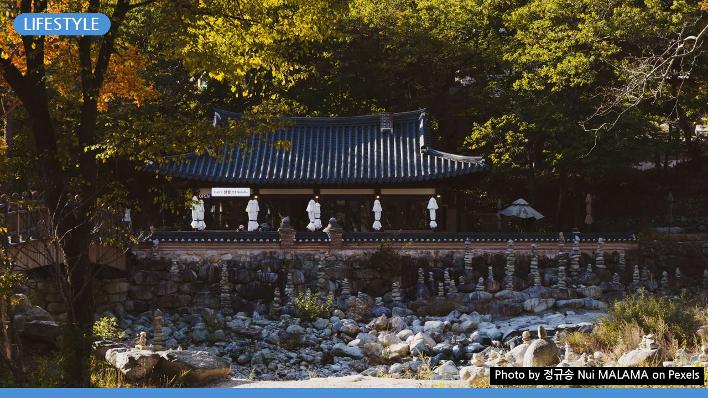

사찰 워케이션 완벽 가이드: 와이파이·업무환경 제대로 활용하는 법
사진: 정규송 Nui MALAMA / Pexels (무료 이미지, 출처 표기)
고요 속 업무 집중? 사찰 워케이션, 이것부터 확인하세요!

번잡한 일상을 벗어나 고요한 사찰에서 업무에 집중하며 워케이션을 꿈꾸시나요? 사찰 워케이션은 전통적인 템플스테이에 업무 환경을 결합한 새로운 형태의 휴식으로, 많은 분들이 새로운 영감과 집중력을 찾기 위해 선택하고 있습니다. 하지만 모든 사찰이 업무 환경을 제공하는 것은 아니며, 필요한 준비물과 유의사항도 일반 템플스테이와는 다릅니다. 이 글에서는 사찰 워케이션을 성공적으로 즐기기 위한 모든 궁금증을 풀어드립니다.
사찰 워케이션, 왜 특별할까요?
사찰 워케이션은 일상적인 업무 공간을 벗어나 자연과 전통문화 속에서 업무 효율을 높이는 경험입니다. 도시의 소음과 방해 요소가 적은 사찰 환경은 집중력 향상에 도움을 줄 수 있습니다. 또한, 명상, 예불(불상 앞에서 불법을 찬미하고 불보살을 공경하는 의식), 공양(식사) 등 사찰의 일상에 참여하며 디지털 피로를 줄이고 심신을 재충전할 기회를 얻을 수 있습니다.
이는 단순히 템플스테이에서 업무를 보는 것을 넘어, 의도적으로 업무와 명상을 조화시키고 균형 잡힌 생활을 시도하는 새로운 라이프스타일의 한 형태라고 할 수 있습니다.
나에게 맞는 사찰 워케이션 장소 찾기
모든 사찰이 워케이션 프로그램을 운영하거나 적합한 업무 환경을 제공하는 것은 아닙니다. 워케이션을 계획할 때는 다음 세 가지 조건을 반드시 확인해야 합니다.
- Wi-Fi 및 전원 콘센트 여부: 안정적인 인터넷 연결과 전원 공급은 필수입니다.
- 업무 공간 유무: 노트북을 편하게 사용할 수 있는 책상과 의자가 있는 독립적인 공간이나 조용한 공용 공간이 있는지 확인합니다.
- 프로그램 유연성: 업무 시간과 템플스테이 프로그램(예불, 공양 등) 참여 시간의 조절이 가능한지 확인합니다.
2026년 9월 기준, 한국불교문화사업단 템플스테이 공식 홈페이지(www.templestay.com)에서 '장기체류형' 또는 '나홀로 템플스테이' 프로그램을 검색하거나, 개별 사찰 홈페이지에서 '워케이션' 관련 정보를 찾아보는 것이 좋습니다. 원하는 사찰이 있다면 직접 전화 문의를 통해 업무 환경 제공 여부를 확인하는 것이 가장 정확합니다.
사찰 워케이션 필수 준비물 체크리스트
성공적인 사찰 워케이션을 위해서는 일반 템플스테이보다 더 꼼꼼한 준비가 필요합니다. 다음 체크리스트를 활용하여 빠짐없이 준비하세요.
성공적인 사찰 워케이션을 위한 팁
사찰 워케이션은 단순한 업무 공간의 변화를 넘어 라이프스타일의 변화를 의미합니다. 다음 팁들을 활용하여 더욱 의미 있는 시간을 보내세요.
- 일과 수행의 균형 잡기: 업무 시간과 사찰 프로그램(예불, 명상, 공양 등) 참여 시간을 적절히 분배하여 몸과 마음의 균형을 찾으세요. 아침 명상이나 저녁 예불은 업무 몰입도를 높이는 데 도움이 될 수 있습니다.
- 고요함을 존중하기: 사찰은 조용한 분위기가 중요한 공간입니다. 전화 통화는 외부에서, 노트북 키보드 소음은 최소화하며 타인의 휴식을 방해하지 않도록 주의합니다. 노이즈 캔슬링 헤드폰이 유용할 수 있습니다.
- 자연과 소통하기: 업무 중간중간 잠시 산책하거나 풍경을 감상하며 머리를 식히세요. 자연 속에서의 짧은 휴식은 새로운 아이디어를 얻는 데 도움이 됩니다.
- 디지털 디톡스 시도: 업무 시간이 끝나면 의도적으로 스마트폰 사용을 줄이고, 책을 읽거나 명상을 하는 등 디지털 기기에서 벗어나는 시간을 가져보세요.
- 유연한 마음가짐: 사찰의 일정은 예측 불가능하게 변동될 수 있습니다. 모든 상황에 유연하게 대처하며 평온한 마음으로 받아들이는 것이 중요합니다.
사찰 워케이션 신청 절차 및 유의사항
사찰 워케이션 프로그램은 일반 템플스테이와 마찬가지로 사전 예약을 통해 신청합니다. 2026년 9월 기준, 대부분의 사찰은 최소 며칠에서 길게는 몇 주까지의 장기 체류형 프로그램을 운영합니다. 인기 있는 사찰이나 시즌에는 일찍 마감될 수 있으니 미리 예약하는 것이 좋습니다.
신청 전에 반드시 프로그램의 상세 내용을 확인하여 Wi-Fi 제공 여부, 업무 공간 형태, 숙소의 난방·냉방 시설, 식사 방식 등을 꼼꼼히 체크하세요. 또한, 사찰별로 다른 규칙(예: 음주 금지, 외부 음식 반입 제한, 통행 금지 시간 등)을 준수해야 합니다. 정확한 사항은 각 사찰 또는 한국불교문화사업단 공식 홈페이지에서 다시 확인하시길 권장합니다.
🔗 이 글도 함께 보면 좋아요: 체형별 옷 코디, 단점 커버하고 장점 살리는 완벽 가이드